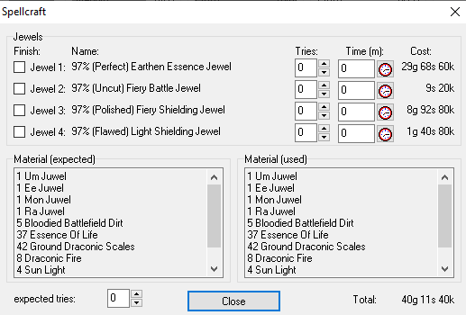

Repair

This dialog is only available in Crafter mode. It is called about Create
... in the bonus tab of the main
page.
Jewelry
Here the banner wizard sees the jewels needed for the item, can stop and
uncheck the number of attempts at creation he has already made. If he
takes into account the production time in the price
model, he can enter this in the time field. However, he can also
have the timer executed automatically with the stopwatch symbol.
Material (expected)
Here, the banning spells are displayed, which are likely to be needed for
the item. The amount depends on the setting of the field: expected
attempts.
Material (consumed)
Here is the material actually used.